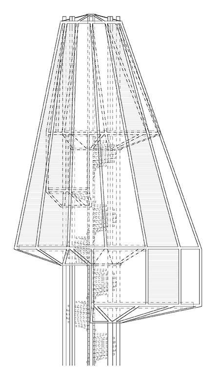
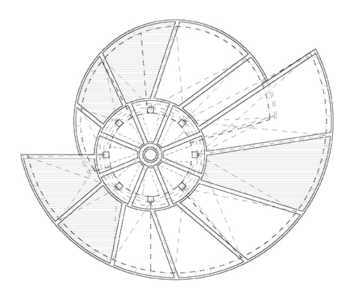
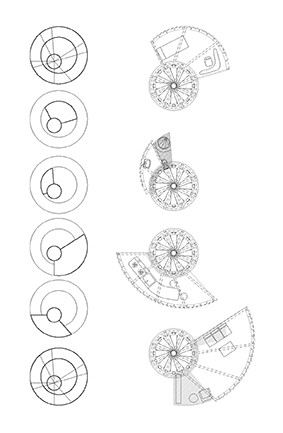
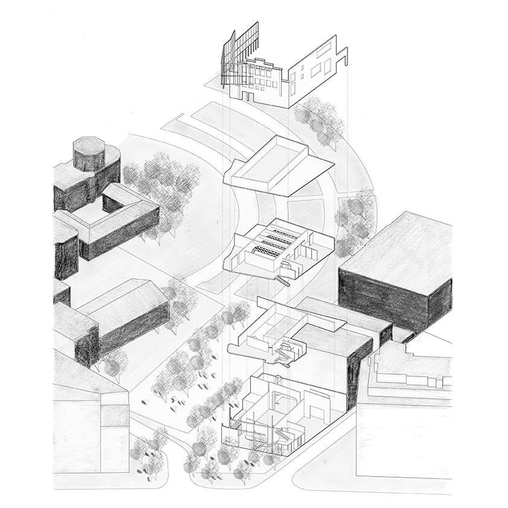

Home Work

Carved Space

Facing the Street

Inner Expansion

Intended Collision

Go for a Walk

OUThabit

Wooden Motion

Cult Artifact

Home Work
Carved Space
Facing the Street
Inner Expansion
Intended Collision
Go for a Walk
OUThabit
Wooden Motion
Cult Artifact
Solid constructions and thick walls are the materials that shape the void of the rugged field of Vilafamés. As a result, this situation generates a huge uncontrolled public space all around the village. Assuming this dichotomy between the massif of the constructed and the void of the empty space, the project intends to sculp the void facilitating the emergence of new paths, alternating constricted and expanded areas. In this way, the new crafted public space will be the one which shapes the new lower area buildings of the project, attached to the ground. On the other hand, as the altitude increases, the architecture, raising from the ground, prevailing and surrounding the void, will be set up to generate a cloistered space, where all the activities of the complex will happen together.
Students Residence Entrance

Axonometry

Floor Plan 1:200

Buildings Relationship Cross Section

Students Residence Cross Section

Main Residence Cross Section

Patio Cross Section

Main Residence Floor Plan 1:50

Model 1:500

Model 1:200

Students residencen section Model 1:20

Construction Detail

It is required to raise a tall mixed use building, together with the rehabilitation of an old sports hall sticked to it. The huge variety of activities the new building will embrace makes the horizontal floor distribution quite complex. In order to deal with this problem, it will be planned a vertical distribution of the uses along the building. Each floor gather a number of diverse activities, that can take place without any contact or possible interruption between each other. The ground floor and the two first floors are destined to comercial use and are connected with the renewed comercial building. The floors above are ocuppied firstly by the different typologies of residencial dwellings, and from the fifth floor to the top, the hotel rooms and suites appear alongside the dwellings. Finally, the roof floor turns up to be a great solarium which contains the hotel pool. This mixture of uses and activities is just possible thanks to the freedom the concrete structure of the building provides, allowing the carving of the projected cube´s volum. That way sunlight and natural ventilation are a constant on all the floors and provide and excelent environment in the whole building.
Building Placement

Project's Floor Plan 1:5000

Building's Floor Plan 1:200

Dwelling & Hotel Arrangment Study

Building's Cross Section

Building's Side View

Dwelling Floors 1:100

Hotel Floors 1:100

Social Dweelings Facade Detail

Hired Dweelings Facade Detail

Hotel Facade Detail

The area of Drassanes is known for being the outfall of three of the most important traffic arteries of Barcelona: the Rambla, the Drassanes avenue and the Paral·lel avenue. All three of them are communicated through one single street called Portal de Santa Madrona, which currently lacks a face that represent it as an actual street. The main objective of the project consists in equipping Portal de Santa Madrona with a proper facade, constituting a new front and finally defining it as a street. The projected building accommodates a total amount of 200 people, distributed over social and hired dwellings in two different blocks. A linear block consolidates the new face of Portal de Santa Madrona and gathers the three types of social dwellings. On the other hand, a tower block dialogues with the tall buildings surrounding the area and embraces the hired dwellings.
Building's Urban Placement

Building's Dwellings Floor Plan 1:200

Building's Front View

Public Interior Space

Urban Model Top View

Block Dwellings Floor Plan 1:50

Block Dwellings Facade Detail

Building's City Integration

Tower Dwellings Floor Plan 1:50

This project proposes the development of a multi-family building, especially attending to the interior quality of the dwellings. The main dwellings are located on the center of the floor and are longitudinally organised. The corner dwellings are organised around a central piece of furniture which contains the kitchen and the bathroom, subdividing the space into different rooms. The dwellings located on the interior area of the block are organised in dúplex. Due to the little dimensions of the dwellings, the use of their inner space is essencial and, because of that, the appareance of some sort of mechanism benefiting this space will be unavoidable. In this way, on the front facade of the building, a cantilever space is projected, providing a huge variety of uses (window, seat, table, etc), and designed in a such a way that the dwelling is expanded out of the facade limit, improving the conditions of the inside space.
Public Space Interaction

Building's City Placement

Building's Floor Plan 1:100

Interior Space Draft

Facade Detail

Window Detail

Dwelling Floor Plan 1:50

In the area of Drassanes happens the collision between the residencial area, attached to the hill of Montjüic, and the huge port area of the city of Barcelona. To solve this conflict, the project suggests raising the height of the street parallel to the old seafront with a gentle slope, allowing the polite encounter between hill and city. Similtaneously, this operation enables two important actions. Firstly, it provides continuity to the old seafront with the projected new one. Secondly, it solves the inner logistic of the whole turistic port through the construction of a large piece, which will include a huge diversity of uses.
Port Master Plan Interventions

Master Plan Top View

Housing & Comercial Intervention

Port Master Plan Cross Sections

Comercial Area Floor Plan 1:500

The main goal is to connect two completely isolated residential areas through a comfortable promenade all neighbours can enjoy, revitalizing the urbaninty of the complex. A central walkable strip structures the promenade in a wa that car traffic gets entirely separated from the pedrestrian traffic. This estructural strip contracts and expands all along the promenade generating many sort of potential activities, and vinculating them to the residential areas on the sides. This dynamic experience ends with a huge open public space which will share very diverse environments; the local market is placed on the entrace, a little stream flows near it and the noise of children playing fills the air.
Promenade's Finale

Promenade's Top View

Promenade's Cross Section

Main Public Space Cross Section

This project pursues the construction of a guests pavilion, or even better, the construction of an habitat. An environment where you could experiment the whole palette of sensations all that surrounds you, in a specific moment, makes you feel. Sense the place you inhabit. A central core of eight metallic pillars, wrapping a spiral staircase, constitutes the main structure of the pavillion. The different floors rise from this core and hang from a circumscribed ring on the top of the pillars by tightened wires. At the end, the construction is sealed with a plastic material called ETFE, which is able to change its coating depending on the desired atmosphere.
Interior Arrangment

Frontal View 1:100
Top View 1:100
Floor Plans Distribution
A swimming pool ceiling. Wood as the only material. The whole dimension of the floor is covered by parallel side to side structural porticos. The huge wooden beams reverse and alternate their position on the ceiling, creating a sensation of movement. Swimming becomes something visually dynamic, pleasant.
Ceiling Motion

Floor Plan & Cross Sections

Structural Joints

Structural Diagrams

Mihrab
- a niche in the wall of a mosque that indicates the qibla; that is, the direction of the Kaaba in Mecca and hence the direction that Muslims should face when praying. -
The idea is to design and locate a mihrab in the Christian cemetery of Igualada. This essencial piece of the islam religion will be thought not only as an object of cult, but as an useful artifact of the cemetery.
In this way, the lower gaps of the mihrab makes the worshiper aware of the surroundings, while the circled hole on the top visually links the two different heights of the cementery.
Cult Artifact

Mihrab's Placement

Mihrab Composition

Arnau

Arnau Axonmetry

Estado Actual: Materiales

Estado Actual: Plantas

Estado Actual: Alzados Frontales

Estado Actual: Alzados Laterales

Programa

Emplazamiento

Alineaciones

Axonometria

Entrada Mercado

Portico

Seccion Longitudinal

Seccion Transversal
P3

P4

P5

P2

PB + P1

Entrada Museo - Zona Pilares

Alzado Norte

Estructura

Fachada Norte

Alzadp Sur

Portrait

Fachada Sur

Portada